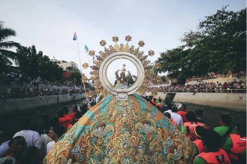

Naga City
Weather Summary
Currently:
High: °F
Wind Chill:
Humidity: %
Wind Speed: Mph
Three Day Forecast
Events
September 3rd Week: Peñafrancia Festival
September 11: Miss Bicolandia
December 1-31: Kamundagan Festival
Peñafrancia Festival
zenrooms.com
The Peñafrancia Festival History can be traced back to somewhere 300 years ago when Fr. Miguel Robles de Covarrubias commissioned a small chapel at the foot of Mt. Isarog, and a small Our Lady of Penafrancia image to be enshrined in it in 1710. Originally, he has pledged to build a stone Our Lady of Peñafrancia Church in Manila near the Pasig River as he has received many miracles of healing through his devotion to the Our Lady of Penafrancia. Under Most Rev. Ysidro de Arevalo, the stone Basilica of Our Lady of Penafrancia was erected, not in Manila but in Naga. Many people since then are flocking to the Basilica of Our Lady of Penafrancia to show their devotion and has since grown to become the largest Marian Devotion in Asia. Then on August 17, 1981, the Our Lady of Peñafrancia original image was stolen. Many Bicolanos were in disbelief. More than a year after the image was stolen, Msgr. Florencio Yllana, a former rector of the old shrine, received a box containing an image in pieces said to be of Ina (what locals lovingly call the Lady of Penafrancia). It was later confirmed that it is the Our Lady of Penafrancia image. The love and devotion that many people have for Ina gave birth to the most-awaited and biggest Marian event in Asia: The Penafrancia Fiesta.